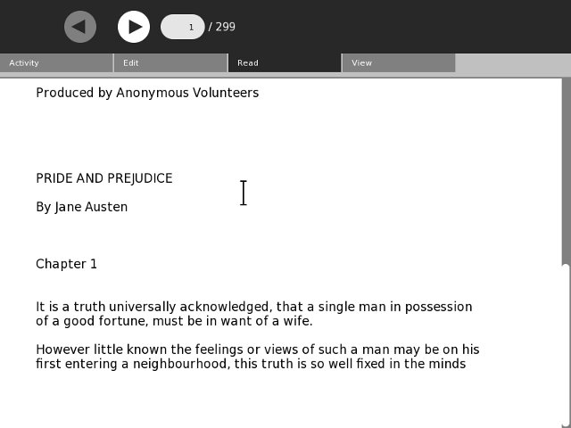

Add Refinements
Toolbars
It is a truth universally acknowledged that a first rate Activity needs good Toolbars. In this chapter we'll learn how to make them. We're going to put the toolbar classes in a separate file from the rest, because there are two styles of toolbar (old and new) and we may want to support both in our Activity. If we have two different files containing toolbar classes our code can decide at runtime which one it wants to use. For now, this code supports the old style, which works with every version of Sugar. The new style is currently only supported by Sugar on a Stick.
There is a file called toolbar.py in the Add_Refinements directory of the Git repository that looks like this:
from gettext import gettext as _
import re
import pango
import gobject
import gtk
from sugar.graphics.toolbutton import ToolButton
from sugar.activity import activity
class ReadToolbar(gtk.Toolbar):
__gtype_name__ = 'ReadToolbar'
def __init__(self):
gtk.Toolbar.__init__(self)
self.back = ToolButton('go-previous')
self.back.set_tooltip(_('Back'))
self.back.props.sensitive = False
self.insert(self.back, -1)
self.back.show()
self.forward = ToolButton('go-next')
self.forward.set_tooltip(_('Forward'))
self.forward.props.sensitive = False
self.insert(self.forward, -1)
self.forward.show()
num_page_item = gtk.ToolItem()
self.num_page_entry = gtk.Entry()
self.num_page_entry.set_text('0')
self.num_page_entry.set_alignment(1)
self.num_page_entry.connect('insert-text',
self.num_page_entry_insert_text_cb)
self.num_page_entry.set_width_chars(4)
num_page_item.add(self.num_page_entry)
self.num_page_entry.show()
self.insert(num_page_item, -1)
num_page_item.show()
total_page_item = gtk.ToolItem()
self.total_page_label = gtk.Label()
label_attributes = pango.AttrList()
label_attributes.insert(pango.AttrSize(14000, 0, -1))
label_attributes.insert(pango.AttrForeground(65535, 65535, 65535, 0, -1))
self.total_page_label.set_attributes(label_attributes)
self.total_page_label.set_text(' / 0')
total_page_item.add(self.total_page_label)
self.total_page_label.show()
self.insert(total_page_item, -1)
total_page_item.show()
def num_page_entry_insert_text_cb(self, entry, text, length, position):
if not re.match('[0-9]', text):
entry.emit_stop_by_name('insert-text')
return True
return False
def update_nav_buttons(self):
current_page = self.current_page
self.back.props.sensitive = current_page > 0
self.forward.props.sensitive = \
current_page < self.total_pages - 1
self.num_page_entry.props.text = str(current_page + 1)
self.total_page_label.props.label = \
' / ' + str(self.total_pages)
def set_total_pages(self, pages):
self.total_pages = pages
def set_current_page(self, page):
self.current_page = page
self.update_nav_buttons()
class ViewToolbar(gtk.Toolbar):
__gtype_name__ = 'ViewToolbar'
__gsignals__ = {
'needs-update-size': (gobject.SIGNAL_RUN_FIRST,
gobject.TYPE_NONE,
([])),
'go-fullscreen': (gobject.SIGNAL_RUN_FIRST,
gobject.TYPE_NONE,
([]))
}
def __init__(self):
gtk.Toolbar.__init__(self)
self.zoom_out = ToolButton('zoom-out')
self.zoom_out.set_tooltip(_('Zoom out'))
self.insert(self.zoom_out, -1)
self.zoom_out.show()
self.zoom_in = ToolButton('zoom-in')
self.zoom_in.set_tooltip(_('Zoom in'))
self.insert(self.zoom_in, -1)
self.zoom_in.show()
spacer = gtk.SeparatorToolItem()
spacer.props.draw = False
self.insert(spacer, -1)
spacer.show()
self.fullscreen = ToolButton('view-fullscreen')
self.fullscreen.set_tooltip(_('Fullscreen'))
self.fullscreen.connect('clicked', self.fullscreen_cb)
self.insert(self.fullscreen, -1)
self.fullscreen.show()
def fullscreen_cb(self, button):
self.emit('go-fullscreen')
Another file in the same directory of the Git repository is named ReadEtextsActivity2.py. It looks like this:
import os
import zipfile
import gtk
import pango
from sugar.activity import activity
from sugar.graphics import style
from toolbar import ReadToolbar, ViewToolbar
from gettext import gettext as _
page=0
PAGE_SIZE = 45
TOOLBAR_READ = 2
class ReadEtextsActivity(activity.Activity):
def __init__(self, handle):
"The entry point to the Activity"
global page
activity.Activity.__init__(self, handle)
toolbox = activity.ActivityToolbox(self)
activity_toolbar = toolbox.get_activity_toolbar()
activity_toolbar.keep.props.visible = False
activity_toolbar.share.props.visible = False
self.edit_toolbar = activity.EditToolbar()
self.edit_toolbar.undo.props.visible = False
self.edit_toolbar.redo.props.visible = False
self.edit_toolbar.separator.props.visible = False
self.edit_toolbar.copy.set_sensitive(False)
self.edit_toolbar.copy.connect('clicked', self.edit_toolbar_copy_cb)
self.edit_toolbar.paste.props.visible = False
toolbox.add_toolbar(_('Edit'), self.edit_toolbar)
self.edit_toolbar.show()
self.read_toolbar = ReadToolbar()
toolbox.add_toolbar(_('Read'), self.read_toolbar)
self.read_toolbar.back.connect('clicked', self.go_back_cb)
self.read_toolbar.forward.connect('clicked', self.go_forward_cb)
self.read_toolbar.num_page_entry.connect('activate', \
self.num_page_entry_activate_cb)
self.read_toolbar.show()
self.view_toolbar = ViewToolbar()
toolbox.add_toolbar(_('View'), self.view_toolbar)
self.view_toolbar.connect('go-fullscreen',
self.view_toolbar_go_fullscreen_cb)
self.view_toolbar.zoom_in.connect('clicked', self.zoom_in_cb)
self.view_toolbar.zoom_out.connect('clicked', self.zoom_out_cb)
self.view_toolbar.show()
self.set_toolbox(toolbox)
toolbox.show()
self.scrolled_window = gtk.ScrolledWindow()
self.scrolled_window.set_policy(gtk.POLICY_NEVER, gtk.POLICY_AUTOMATIC)
self.scrolled_window.props.shadow_type = gtk.SHADOW_NONE
self.textview = gtk.TextView()
self.textview.set_editable(False)
self.textview.set_cursor_visible(False)
self.textview.set_left_margin(50)
self.textview.connect("key_press_event", self.keypress_cb)
self.scrolled_window.add(self.textview)
self.set_canvas(self.scrolled_window)
self.textview.show()
self.scrolled_window.show()
page = 0
self.clipboard = gtk.Clipboard(display=gtk.gdk.display_get_default(), \
selection="CLIPBOARD")
self.textview.grab_focus()
self.font_desc = pango.FontDescription("sans %d" % style.zoom(10))
self.textview.modify_font(self.font_desc)
buffer = self.textview.get_buffer()
self.markset_id = buffer.connect("mark-set", self.mark_set_cb)
self.toolbox.set_current_toolbar(TOOLBAR_READ)
def keypress_cb(self, widget, event):
"Respond when the user presses one of the arrow keys"
keyname = gtk.gdk.keyval_name(event.keyval)
print keyname
if keyname == 'plus':
self.font_increase()
return True
if keyname == 'minus':
self.font_decrease()
return True
if keyname == 'Page_Up' :
self.page_previous()
return True
if keyname == 'Page_Down':
self.page_next()
return True
if keyname == 'Up' or keyname == 'KP_Up' \
or keyname == 'KP_Left':
self.scroll_up()
return True
if keyname == 'Down' or keyname == 'KP_Down' \
or keyname == 'KP_Right':
self.scroll_down()
return True
return False
def num_page_entry_activate_cb(self, entry):
global page
if entry.props.text:
new_page = int(entry.props.text) - 1
else:
new_page = 0
if new_page >= self.read_toolbar.total_pages:
new_page = self.read_toolbar.total_pages - 1
elif new_page < 0:
new_page = 0
self.read_toolbar.current_page = new_page
self.read_toolbar.set_current_page(new_page)
self.show_page(new_page)
entry.props.text = str(new_page + 1)
self.read_toolbar.update_nav_buttons()
page = new_page
def go_back_cb(self, button):
self.page_previous()
def go_forward_cb(self, button):
self.page_next()
def page_previous(self):
global page
page=page-1
if page < 0: page=0
self.read_toolbar.set_current_page(page)
self.show_page(page)
v_adjustment = self.scrolled_window.get_vadjustment()
v_adjustment.value = v_adjustment.upper - v_adjustment.page_size
def page_next(self):
global page
page=page+1
if page >= len(self.page_index): page=0
self.read_toolbar.set_current_page(page)
self.show_page(page)
v_adjustment = self.scrolled_window.get_vadjustment()
v_adjustment.value = v_adjustment.lower
def zoom_in_cb(self, button):
self.font_increase()
def zoom_out_cb(self, button):
self.font_decrease()
def font_decrease(self):
font_size = self.font_desc.get_size() / 1024
font_size = font_size - 1
if font_size < 1:
font_size = 1
self.font_desc.set_size(font_size * 1024)
self.textview.modify_font(self.font_desc)
def font_increase(self):
font_size = self.font_desc.get_size() / 1024
font_size = font_size + 1
self.font_desc.set_size(font_size * 1024)
self.textview.modify_font(self.font_desc)
def mark_set_cb(self, textbuffer, iter, textmark):
if textbuffer.get_has_selection():
begin, end = textbuffer.get_selection_bounds()
self.edit_toolbar.copy.set_sensitive(True)
else:
self.edit_toolbar.copy.set_sensitive(False)
def edit_toolbar_copy_cb(self, button):
textbuffer = self.textview.get_buffer()
begin, end = textbuffer.get_selection_bounds()
copy_text = textbuffer.get_text(begin, end)
self.clipboard.set_text(copy_text)
def view_toolbar_go_fullscreen_cb(self, view_toolbar):
self.fullscreen()
def scroll_down(self):
v_adjustment = self.scrolled_window.get_vadjustment()
if v_adjustment.value == v_adjustment.upper - \
v_adjustment.page_size:
self.page_next()
return
if v_adjustment.value < v_adjustment.upper - \
v_adjustment.page_size:
new_value = v_adjustment.value + v_adjustment.step_increment
if new_value > v_adjustment.upper - v_adjustment.page_size:
new_value = v_adjustment.upper - v_adjustment.page_size
v_adjustment.value = new_value
def scroll_up(self):
v_adjustment = self.scrolled_window.get_vadjustment()
if v_adjustment.value == v_adjustment.lower:
self.page_previous()
return
if v_adjustment.value > v_adjustment.lower:
new_value = v_adjustment.value - \
v_adjustment.step_increment
if new_value < v_adjustment.lower:
new_value = v_adjustment.lower
v_adjustment.value = new_value
def show_page(self, page_number):
global PAGE_SIZE, current_word
position = self.page_index[page_number]
self.etext_file.seek(position)
linecount = 0
label_text = '\n\n\n'
textbuffer = self.textview.get_buffer()
while linecount < PAGE_SIZE:
line = self.etext_file.readline()
label_text = label_text + unicode(line, 'iso-8859-1')
linecount = linecount + 1
label_text = label_text + '\n\n\n'
textbuffer.set_text(label_text)
self.textview.set_buffer(textbuffer)
def save_extracted_file(self, zipfile, filename):
"Extract the file to a temp directory for viewing"
filebytes = zipfile.read(filename)
outfn = self.make_new_filename(filename)
if (outfn == ''):
return False
f = open(os.path.join(self.get_activity_root(), 'tmp', outfn), 'w')
try:
f.write(filebytes)
finally:
f.close()
def get_saved_page_number(self):
global page
title = self.metadata.get('title', '')
if title == '' or not title[len(title)- 1].isdigit():
page = 0
else:
i = len(title) - 1
newPage = ''
while (title[i].isdigit() and i > 0):
newPage = title[i] + newPage
i = i - 1
if title[i] == 'P':
page = int(newPage) - 1
else:
# not a page number; maybe a volume number.
page = 0
def save_page_number(self):
global page
title = self.metadata.get('title', '')
if title == '' or not title[len(title)- 1].isdigit():
title = title + ' P' + str(page + 1)
else:
i = len(title) - 1
while (title[i].isdigit() and i > 0):
i = i - 1
if title[i] == 'P':
title = title[0:i] + 'P' + str(page + 1)
else:
title = title + ' P' + str(page + 1)
self.metadata['title'] = title
def read_file(self, filename):
"Read the Etext file"
global PAGE_SIZE, page
if zipfile.is_zipfile(filename):
self.zf = zipfile.ZipFile(filename, 'r')
self.book_files = self.zf.namelist()
self.save_extracted_file(self.zf, self.book_files[0])
currentFileName = os.path.join(self.get_activity_root(), \
'tmp', self.book_files[0])
else:
currentFileName = filename
self.etext_file = open(currentFileName,"r")
self.page_index = [ 0 ]
pagecount = 0
linecount = 0
while self.etext_file:
line = self.etext_file.readline()
if not line:
break
linecount = linecount + 1
if linecount >= PAGE_SIZE:
position = self.etext_file.tell()
self.page_index.append(position)
linecount = 0
pagecount = pagecount + 1
if filename.endswith(".zip"):
os.remove(currentFileName)
self.get_saved_page_number()
self.show_page(page)
self.read_toolbar.set_total_pages(pagecount + 1)
self.read_toolbar.set_current_page(page)
def make_new_filename(self, filename):
partition_tuple = filename.rpartition('/')
return partition_tuple[2]
def write_file(self, filename):
"Save meta data for the file."
self.metadata['activity'] = self.get_bundle_id()
self.save_page_number()
This is the activity.info for this example:
[Activity] name = Read ETexts II service_name = net.flossmanuals.ReadEtextsActivity icon = read-etexts exec = sugar-activity ReadEtextsActivity2.ReadEtextsActivity show_launcher = no activity_version = 1 mime_types = text/plain;application/zip license = GPLv2+
The line in bold is the only one that needs changing. When we run this new version this is what we'll see:

There are a few things worth pointing out in this code. First, have a look at this import:
from gettext import gettext as _
We'll be using the gettext module of Python to support translating our Activity into other languages. We'll be using it in statements like this one:
self.back.set_tooltip(_('Back'))
The underscore acts the same way as the gettext function because of the way we imported gettext. The effect of this statement will be to look in a special translation file for a word or phrase that matches the key "Back" and replace it with its translation. If there is no translation file for the language we want then it will simply use the word "Back". We'll explore setting up these translation files later, but for now using gettext for all of the words and phrases we will show to our Activity users lays some important groundwork.
The second thing worth pointing out is that while our revised Activity has four toolbars we only had to create two of them. The other two, Activity and Edit, are part of the Sugar Python library. We can use those toolbars as is, hide the controls we don't need, or even extend them by adding new controls. In the example we're hiding the Keep and Share controls of the Activity toolbar and the Undo, Redo, and Paste buttons of the Edit toolbar. We currently do not support sharing books or modifying the text in books so these controls are not needed. Note too that the Activity toolbar is part of the ActivityToolbox. There is no way to give your Activity a toolbox that does not contain the Activity toolbar as its first entry.
Another thing to notice is that the Activity class doesn't just provide us with a window. The window has a VBox to hold our toolbars and the body of our Activity. We install the toolbox using set_toolbox() and the body of the Activity using set_canvas().
The Read and View toolbars are regular PyGtk programming, but notice that there is a special button for Sugar toolbars that can have a tooltip attached to it, plus the View toolbar has code to hide the toolbox and ReadEtextsActivity2 has code to unhide it. This is an easy function to add to your own Activities and many games and other kinds of Activities can benefit from the increased screen area you get when you hide the toolbox.
Metadata And Journal Entries
Every Journal entry represents a single file plus metadata, or information describing the file. There are standard metadata entries that all Journal entries have and you can also create your own custom metadata.
Unlike ReadEtextsActivity, this version has a write_file() method.
def write_file(self, filename):
"Save meta data for the file."
self.metadata['activity'] = self.get_bundle_id()
self.save_page_number()
We didn't have a write_file() method before because we weren't going to update the file the book is in, and we still aren't. We will, however, be updating the metadata for the Journal entry. Specifically, we'll be doing two things:
- Save the page number our Activity user stopped reading on so when he launches the Activity again we can return to that page.
- Tell the Journal entry that it belongs to our Activity, so that in the future it will use our Activity's icon and can launch our Activity with one click.
The way the Read Activity saves page number is to use a custom metadata property.
self.metadata['Read_current_page'] = \
str(self._document.get_page_cache().get_current_page())
Read creates a custom metadata property named Read_current_page to store the current page number. You can create any number of custom metadata properties just this easily, so you may wonder why we aren't doing that with Read Etexts. Actually, the first version of Read Etexts did use a custom property, but in Sugar .82 or lower there was a bug in the Journal such that custom metadata did not survive after the computer was turned off. As a result my Activity would remember pages numbers while the computer was running, but would forget them as soon as it was shut down. XO laptops currently cannot upgrade to anything newer than .82, and when it is possible to upgrade it will be a big job for the schools.
To get around this problem I created the following two methods:
def get_saved_page_number(self):
global page
title = self.metadata.get('title', '')
if title == '' or not title[len(title)- 1].isdigit():
page = 0
else:
i = len(title) - 1
newPage = ''
while (title[i].isdigit() and i > 0):
newPage = title[i] + newPage
i = i - 1
if title[i] == 'P':
page = int(newPage) - 1
else:
# not a page number; maybe a volume number.
page = 0
def save_page_number(self):
global page
title = self.metadata.get('title', '')
if title == '' or not title[len(title)- 1].isdigit():
title = title + ' P' + str(page + 1)
else:
i = len(title) - 1
while (title[i].isdigit() and i > 0):
i = i - 1
if title[i] == 'P':
title = title[0:i] + 'P' + str(page + 1)
else:
title = title + ' P' + str(page + 1)
self.metadata['title'] = title
save_page_number() looks at the current title metadata and either adds a page number to the end of it or updates the page number already there. Since title is standard metadata for all Journal entries the Journal bug does not affect it.
These examples show how to read metadata too.
title = self.metadata.get('title', '')
This line of code says "Get the metadata property named title and put it in the variable named title, If there is no title property put an empty string in title.
Generally you will save metadata in the write_file() method and read it in the read_file() method.
In a normal Activity that writes out a file in write_file() this next line would be unnecessary:
self.metadata['activity'] = self.get_bundle_id()
Any Journal entry created by an Activity will automatically have this property set. In the case of Pride and Prejudice, our Activity did not create it. We are able to read it because our Activity supports its MIME type. Unfortunately, that MIME type, application/zip, is used by other Activities. I found it very frustrating to want to open a book in Read Etexts and accidentally have it opened in EToys instead. This line of code solves that problem. You only need to use Start Using... the first time you read a book. After that the book will use the Read Etexts icon and can be resumed with a single click.
This does not at all affect the MIME type of the Journal entry, so if you wanted to deliberately open Pride and Prejudice with Etoys it is still possible.
Before we leave the subject of Journal metadata let's look at all the standard metadata that every Activity has. Here is some code that creates a new Journal entry and updates a bunch of standard properties:
def create_journal_entry(self, tempfile):
journal_entry = datastore.create()
journal_title = self.selected_title
if self.selected_volume != '':
journal_title += ' ' + _('Volume') + ' ' + self.selected_volume
if self.selected_author != '':
journal_title = journal_title + ', by ' + self.selected_author
journal_entry.metadata['title'] = journal_title
journal_entry.metadata['title_set_by_user'] = '1'
journal_entry.metadata['keep'] = '0'
format = self._books_toolbar.format_combo.props.value
if format == '.djvu':
journal_entry.metadata['mime_type'] = 'image/vnd.djvu'
if format == '.pdf' or format == '_bw.pdf':
journal_entry.metadata['mime_type'] = 'application/pdf'
journal_entry.metadata['buddies'] = ''
journal_entry.metadata['preview'] = ''
journal_entry.metadata['icon-color'] = profile.get_color().to_string()
textbuffer = self.textview.get_buffer()
journal_entry.metadata['description'] = \
textbuffer.get_text(textbuffer.get_start_iter(), \
textbuffer.get_end_iter())
journal_entry.file_path = tempfile
datastore.write(journal_entry)
os.remove(tempfile)
self._alert(_('Success'), self.selected_title + _(' added to Journal.'))
This code is taken from an Activity I wrote that downloads books from a website and creates Journal entries for them. The Journal entries contain a friendly title and a full description of the book.
Most Activities will only deal with one Journal entry by using the read_file() and write_file() methods but you are not limited to that. You can create new Journal entries using code like this example, and you can also list out and read any entries in the Journal. Here is some code to list out image files that have Journal entries:
def load_journal_table(self):
ds_objects, num_objects = datastore.find({\
'mime_type':['image/jpeg', 'image/gif', \
'image/tiff', 'image/png']})
for i in xrange (0, num_objects, 1):
title = ds_objects[i].metadata['title']
mime_type = ds_objects[i].metadata['mime_type']
if mime_type == 'image/jpeg' and not title.endswith('.jpg')\
and not title.endswith('.jpeg') \
and not title.endswith('.JPG') and not title.endswith('.JPEG') :
title = title + '.jpg'
if mime_type == 'image/png' and not title.endswith('.png')\
and not title.endswith('.PNG'):
title = title + '.png'
if mime_type == 'image/gif' and not title.endswith('.gif')\
and not title.endswith('.GIF'):
title = title + '.gif'
if mime_type == 'image/tiff' and not title.endswith('.tiff')\
and not title.endswith('.TIFF'):
title = title + '.tiff'
jobject_wrapper = JobjectWrapper()
jobject_wrapper.set_jobject(ds_objects[i])
... add the jobject wrapper to a list here ...
valid_endings = ('.jpg', '.jpeg', '.JPEG', '.JPG', '.gif',\
'.GIF', '.tiff', '.TIFF', '.png', '.PNG')
ds_mounts = datastore.mounts()
if len(ds_mounts) == 1 and ds_mounts[0]['id'] == 1:
# datastore.mounts() is stubbed out, we're running .84 or better
for dirname, dirnames, filenames in os.walk('/media'):
if '.olpc.store' in dirnames:
dirnames.remove('.olpc.store')
# don't visit .olpc.store directories
for filename in filenames:
if filename.endswith(valid_endings):
jobject_wrapper = JobjectWrapper()
jobject_wrapper.set_file_path(os.path.join(\
dirname, filename))
... Add these jobject wrappers to the same list ...
If this code seems complicated you should understand that most of this code is needed to give an identical experience under Sugar .82 and later versions. Really the only code you need to list Journal objects is this:
ds_objects, num_objects = datastore.find({\
'mime_type':['image/jpeg', 'image/gif', \
'image/tiff', 'image/png']})
for i in xrange (0, num_objects, 1):
title = ds_objects[i].metadata['title']
mime_type = ds_objects[i].metadata['mime_type']
This code will list out all the image files in an array and you can loop through it and find out what you need to know about those images. When you're ready to read one of those image files you can use code like this to get the path to the file:
path = ds_objects[i].get_file_path()
It is important to use the get_file_path() method immediately before you read the file. The reason is that the path does not exist before you call get_file_path() and will not exist long afterwards. Remember that Sugar does not let you deal with the Journal directly, in order to prevent malicious Activities from harming each other. Instead you are given paths of files to read and write to and Sugar deals with getting them to and from the Journal.
So why use the complex code I wrote when something simpler will do the same thing? There are several reasons:
- In Sugar .82 the simpler code will list all image files in your Journal, plus all image files in your SD card if your XO has one, plus any image files in any USB thumb drives you may have mounted. In later versions of Sugar only image files in the Journal proper are listed. I liked the Sugar .82 behavior and this code gives that behavior in all Sugar versions.
- In one of the Sugar versions the title of the Journal entry is just the first part of the filename, without the .gif, .png, or .jpg suffix. I wanted the title to always be the complete filename with suffix so I use the MIME type to figure out what the suffix should be and if it's missing I add it.
To make ds objects work the same way as regular files on thumb drives I create a wrapper class to contain both:
class JobjectWrapper():
def __init__(self):
self.__jobject = None
self.__file_path = None
def set_jobject(self, jobject):
self.__jobject = jobject
def set_file_path(self, file_path):
self.__file_path = file_path
def get_file_path(self):
if self.__jobject != None:
return self.__jobject.get_file_path()
else:
return self.__file_path
As you can see when I read a file on an SD card or a thumb drive I'm reading the actual file using its actual path, not a temporary one. Even so my Activity cannot write to an SD card or a thumb drive. It can only read from them. If you want to export data to a file on a thumb drive the best you can do is to create a Journal entry with the appropriate MIME type. The Activity user can then copy this entry to the thumb drive using the Journal.
We've covered a lot of technical information in this chapter and there's more to come, but before we get to that we need to look at some other important topics:
- Putting your Activity in version control. This will enable you to share your code with the world and get other people to help work on it.
- Getting your Activity translated into other languages.
- Distributing your finished Activity. (Or your not quite finished but still useful Activity).
Author : AddRefinements
© James Simmons 2009, 2010
Modifications:
Lachlan Musicman 2010
License : General Public License
Produced in FLOSS Manuals (http://www.flossmanuals.net)